بمبو استودیو از صفر، برای A1 mini و AMS lite
پانزده فصل به ترتیبِ کاری که واقعاً انجام میدهی. همهٔ تصویرها عکس واقعی از خود برنامهاند. اسم دکمهها و تنظیمها همانطور که در برنامه میبینی انگلیسی نوشته شده تا راحت پیدایشان کنی. هر فصل را که یاد گرفتی تیک بزن.
۱راهاندازی اولیه
یکبار انجام میدهی و تمام.
- نصبفایل dmg مربوط به macOS را باز کن و Bambu Studio را به پوشهٔ Applications بکش.
- راهانداز اولیهمنطقه را انتخاب کن. در صفحهٔ انتخاب پرینتر، Bambu Lab A1 mini با نازل 0.4 را انتخاب کن. در مرحلهٔ فیلامنتها، جنس موادی را که داری مثل PLA علامت بزن.
- ورود به حساب (اختیاری)برای برش دادن (Slice) لازم نیست وارد حساب شوی. اگر بخواهی امکانات مربوط به پرینتر در تب Device را ببینی، با حساب Bambu وارد شو.
- کارت پرینتر و صفحهدر ستون چپ، کارت Printer را روی Bambu Lab A1 mini نگه دار و Plate type را روی صفحهای بگذار که واقعاً روی دستگاه است. در تصویر زیر این صفحه Textured PEI Plate است.
- هماهنگی با AMS liteقرقرهها را در AMS lite بگذار و دکمهٔ Sync info را بزن تا اطلاعات فیلامنتها خوانده شود.
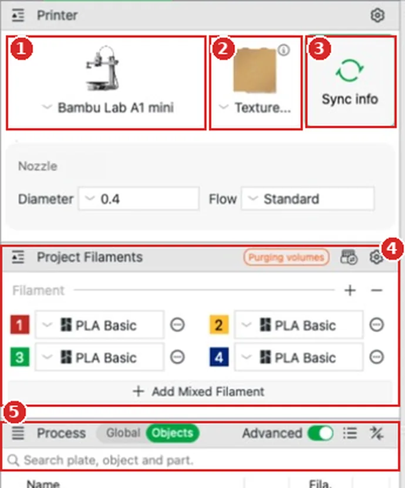
۲نقشهٔ برنامه
این عکس واقعی پنجرهٔ اصلی برنامه است. روی هر قسمت بزن یا موس را رویش نگه دار تا توضیحش را ببینی. همچنین میتوانی از فهرست زیر عکس هم انتخاب کنی.
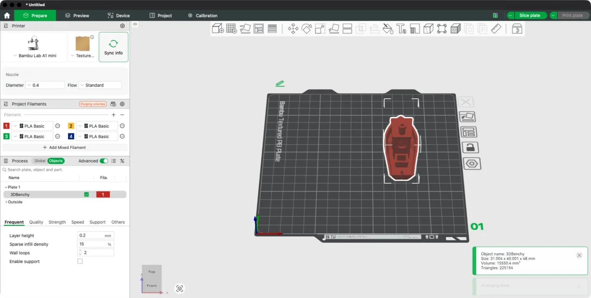
۳اولین پرینت، قدم به قدم
با یک مدل سادهٔ تکرنگ شروع کن تا مسیر کامل را یکبار بروی. مدل نمونه در تصویرها Benchy است.
- مدل را وارد کنفایل STL یا 3MF یا STEP را روی صفحه بکش، یا از دکمهٔ Add در نوار ابزار استفاده کن. صفحهٔ A1 mini ۱۸۰ در ۱۸۰ در ۱۸۰ میلیمتر است. مدل بزرگتر را باید کوچک کنی یا برش بزنی (فصل ۶).
- درست روی صفحه بنشانابزار Lay on face را با کلید F فعال کن و روی سطحی کلیک کن که باید کف قطعه شود. بهترین کف، بزرگترین سطح صاف است.
- فیلامنت را انتخاب کندر بخش Project Filaments، برای خانهٔ ۱ از لیست بازشو جنس و رنگ را انتخاب کن تا با قرقرهٔ واقعی یکی باشد.
- ارتفاع لایه را بگذاردر بخش Process تاگل Global را روی Global بگذار؛ در حالت Objects لیست پروفایل بالای پنل دیده نمیشود. بالای پنل پروفایل 0.20mm Standard @BBL A1M را میبینی. ارتفاع لایه را در تب Frequent پیدا میکنی و روی 0.2 mm بگذار. این مقدار استاندارد است. کمتر یعنی لایهٔ ریزتر و چاپ کندتر.
- اسلایس کنSlice plate را بزن. برنامه به تب Preview میرود.
- پیشنمایش را واقعاً نگاه کننوار عمودی سمت راست را بالا و پایین ببر. بالا 240 / 48.00 mm و پایین 1 / 0.20 mm است. دنبال قسمتهای معلق در هوا و لایهٔ اول ناقص بگرد.
- بفرستPrint plate را بزن. پنجرهٔ ارسال باز میشود. (این پنجره در عکسهای این راهنما نیامده؛ شرح آن طبق مستندات رسمی است.) در آن پرینتر را انتخاب کن، گزینههای تراز صفحه و کالیبراسیون را بررسی کن و ارسال را بزن. اگر از حالت Print plate استفاده نکنی، فایل اسلایسشده را هم میتوانی جدا ذخیره کنی.
- پروژه را ذخیره کناز منوی File گزینهٔ Save Project را بزن. فایل 3MF مدل، چینش، رنگها و همهٔ تنظیمها را داخلش نگه میدارد.
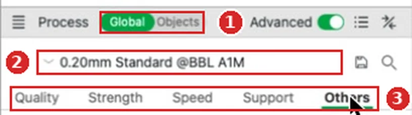
دو نگاه به نوار بالا و پیشنمایش
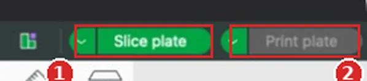
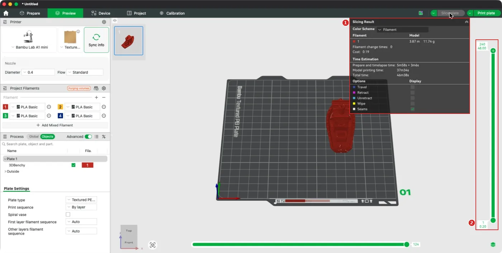
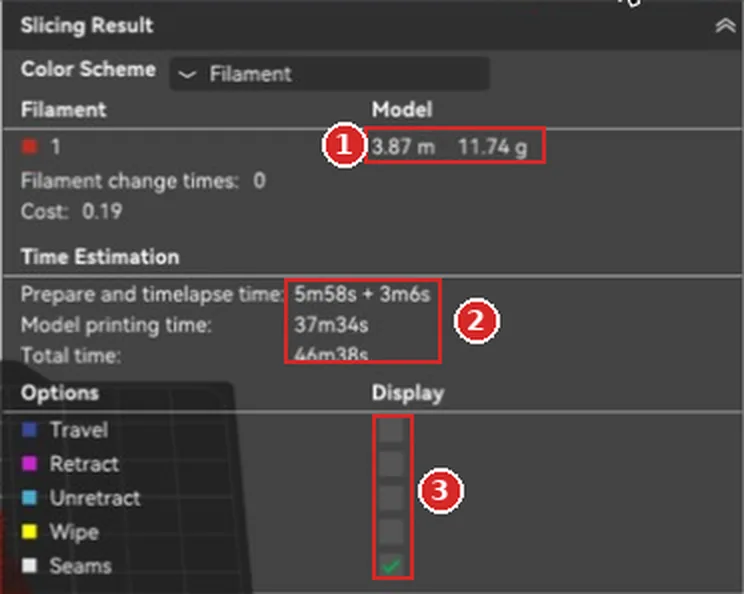
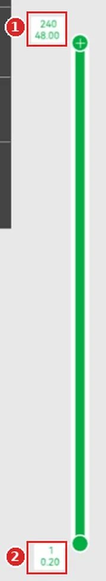
۴سطح صاف و باکیفیت
هدفت را انتخاب کن تا بگویم کدام تنظیم را کجا عوض کنی. مقادیر برای نازل ۰٫۴ و PLA است.
اگر اسم یک تنظیم در نسخهٔ تو کمی فرق داشت، جستوجوی بالای بخش Process را بزن. نشانِ طبق مستندات رسمی یعنی آن گزینه را در عکسهای این راهنما ندیدهام.
تنظیمهای واقعی در خود برنامه
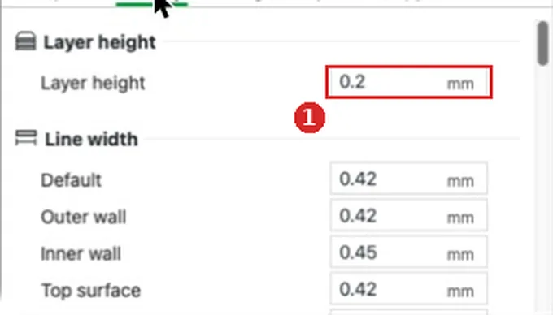
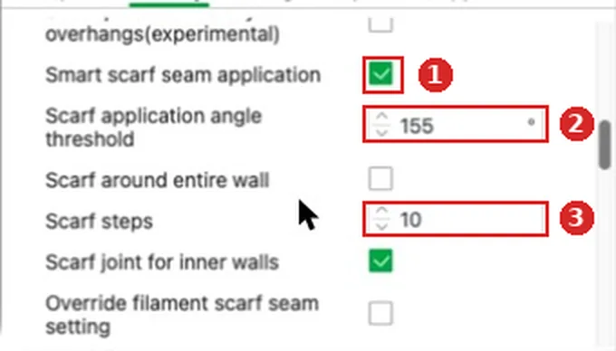
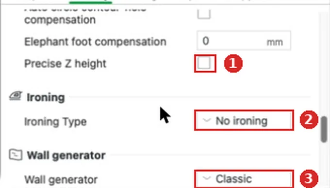
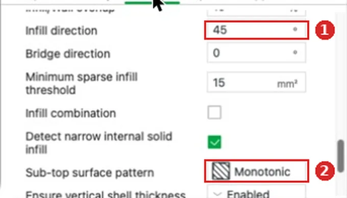
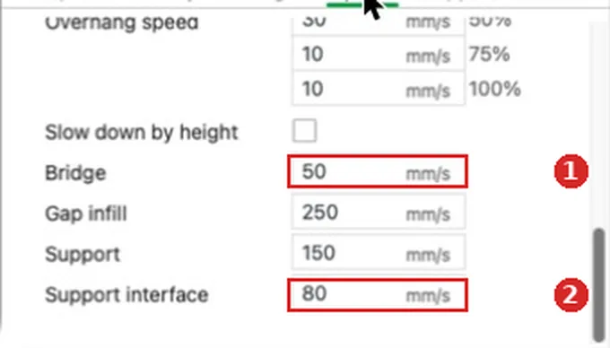
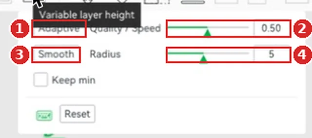
پروفایلهای رسمی Bambu (طبق مستندات؛ ممکن است در منوی پروفایل نسخهٔ شما با اسم کمی متفاوت باشند)
| پروفایل | ارتفاع لایه | مناسب برای |
|---|---|---|
| 0.08mm Extra Fine | 0.08 mm | فیگور و قطعهٔ نمایشی. زمان حدود دو و نیم برابر |
| 0.12mm Fine | 0.12 mm | سطح خیلی خوب با زمان معقول |
| 0.16mm Optimal | 0.16 mm | تعادل خوب برای محصول فروشی |
| 0.20mm Standard | 0.20 mm | پیشفرض، کارهای روزمره |
| 0.24mm Draft | 0.24 mm | نمونهٔ سریع و قطعهٔ فنی |
نامهای جدول زیر طبق مستندات است. پروفایل 0.20mm Standard @BBL A1M را در حالت Global، بالای پنل Process، دیدهام و تأیید شده است. ارتفاع لایه را همانطور که در فصل ۳ گفتیم، در تب Frequent یا Quality عوض کن.
چیزهایی که به نرمافزار ربط ندارند ولی اثرشان بیشتر است
- فیلامنت خشک. PLA نمکشیده سطح زبر و پر از نخ میدهد.
- جهت قطعه. سطحی که مهم است را عمودی یا رو به بالا بگذار. زیرِ قسمتهای شیبدار و جای ساپورت همیشه زبرتر است.
- صفحهٔ Smooth PEI Plate کفِ براق میدهد و صفحهٔ Textured کف مات و دانهدار. طبق مستندات رسمی
- فیلامنت مات (PLA Matte) خط لایه را خیلی کمتر نشان میدهد.
۵چینش، جهت و ساپورت
جهت درست، نصف کیفیت است.
چینش روی صفحه
- Lay on face (F) سطحی را که کلیک میکنی کف قطعه میکند. پنلش دو حالت Mode دارد: Convex hull و Triangular facet.
- Arrange و Auto orient در نوار ابزار هستند. Auto orient جهتی با ساپورت کمتر پیشنهاد میدهد؛ همیشه بهترین نیست، خودت هم نگاه کن. طبق مستندات رسمی
- Move و Rotate و Scale برای جابهجایی، چرخش و تغییر اندازهاند. اسم هر آیکون را با نگه داشتن موس روی آن ببین.
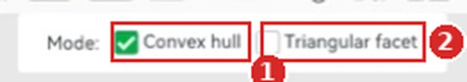
ساپورت
- روشن کردندر تب Frequent تیک Enable support را بزن.
- تنظیم در تب Supportدر بخش Advanced مقدار Initial layer density (پیشفرض ۹۰٪)، Top Z distance و Bottom Z distance (هر دو ۰٫۲) و Base pattern را میبینی.
- نوعنوع ساپورت (مثلاً tree(auto) برای فیگور و normal(auto) برای قطعهٔ هندسی) طبق مستندات رسمی
- کجاگزینهٔ On build plate only باعث میشود ساپورت فقط روی صفحه بنشیند. طبق مستندات رسمی
- کنترل دستیابزار Support painting (L): با کلیک چپ جایی را که حتماً ساپورت میخواهد علامت بزن و با کلیک راست جایی را که نباید داشته باشد.
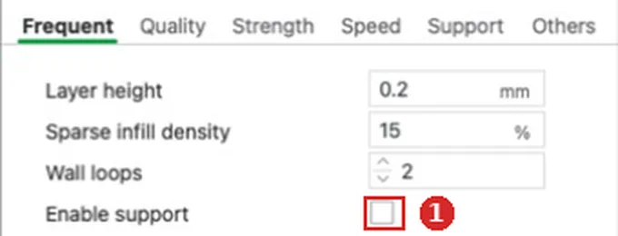
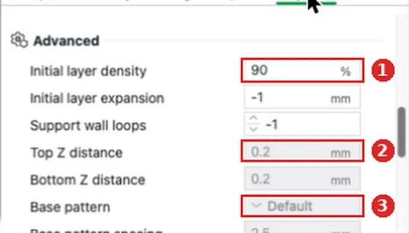
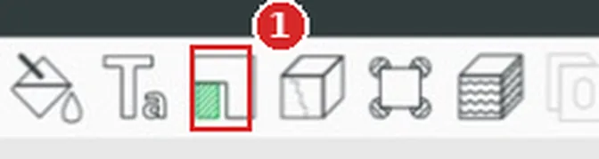
لبهها و Brim
قطعهٔ باریک و بلند یا قطعهای که گوشههایش بلند میشود، به Brim نیاز دارد. در تب Others بخش Bed adhesion را ببین.
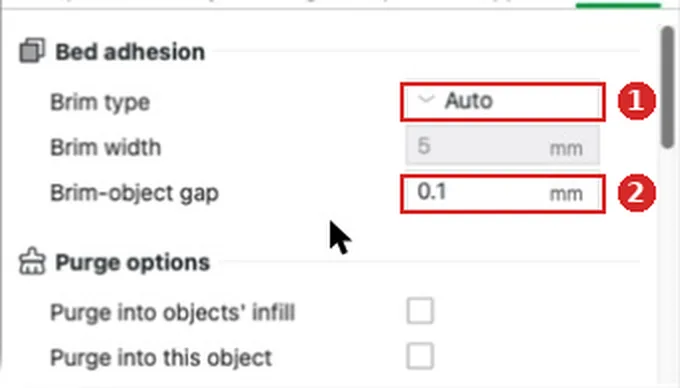
۶برش زدن و کانکتور گذاشتن
برای مدلهای بزرگتر از صفحهٔ ۱۸۰ میلیمتری، یا وقتی میخواهی دو نیمه جدا چاپ شوند. اگر بعد از برش اندازهٔ کانکتورها یا سوراخها باید دقیق بماند، فصل ۱۲ را هم ببین؛ تغییر اندازه با درصد، همهٔ اندازهها را با هم عوض میکند.
- ابزار برش را باز کنقطعه را انتخاب کن و Cut را بزن (C). پنل برش بالای صفحه باز میشود. برای برگشت از دکمهٔ return بالا سمت چپ پنل استفاده کن.
- نوع برشدر Mode حالت Planar (برش تخت) انتخاب شده است. Dovetail که لبهٔ دمچلچلهای میسازد، طبق مستندات رسمی
- صفحهٔ برش را جابهجا کندر بخشهای Rotation (X و Y و Z) و Movement و Height عدد را تایپ کن یا صفحهٔ برش را روی مدل بکش.
- کانکتور اضافه کندکمهٔ Add connectors را بزن. با پنل کانکتور، نوع و اندازه را تعیین میکنی. دو تا سه کانکتور کافی است و قرینه نگذار تا قطعه فقط در یک جهت جا برود.
- مشخصات کانکتوردر Type یکی از Plug و Dowel و Snap و Thread را انتخاب کن (پیشفرض Plug). بعد Style و Shape و Depth ratio و Size را تنظیم کن. هر عدد یک فیلد تلرانس کنارش دارد. وقتی تمام شد Confirm connectors را بزن.
- بعد از برش چه شوددر بخش After cut برای هر تکه Keep orientation و Place on cut و Flip را تنظیم کن. با راستکلیک روی یک تکه، آن را به سمت دیگر برش منتقل میکنی.
- برش بزنPerform cut را بزن. دو قطعهٔ جدا میگیری. با Reset همهچیز به حالت اول برمیگردد.
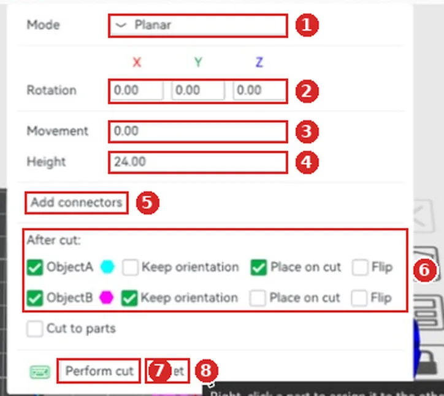
کدام کانکتور؟
این پنل بعد از Add connectors باز میشود. انواع را از فهرست زیر ببین.
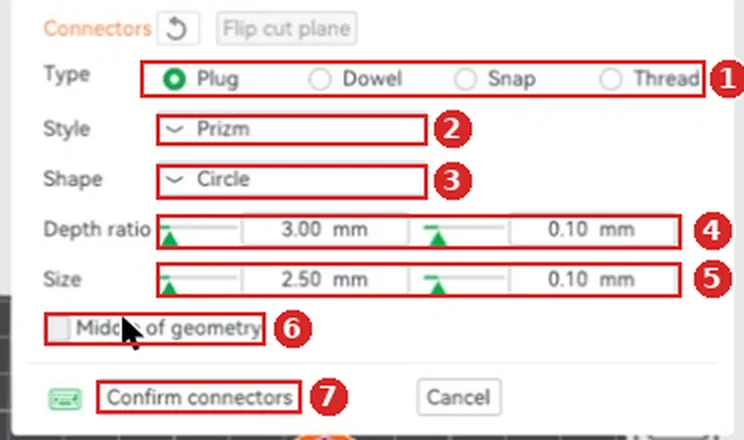
۷رنگها و AMS lite
AMS lite چهار رنگ را در یک پرینت جا میدهد. سه روش برای رنگ دادن داری.
قدم اول: لیست فیلامنت
- همگامسازیدر بخش Project Filaments دکمهٔ Sync info را در ستون چپ بزن تا چهار خانهٔ AMS با رنگ واقعی بیایند. اگر پرینتر وصل نیست، با + دستی فیلامنت اضافه کن.
- شمارهها را به خاطر بسپارهر فیلامنت یک شماره دارد (۱ تا ۴). در همهٔ بخشها با همین شمارهها کار میکنی.
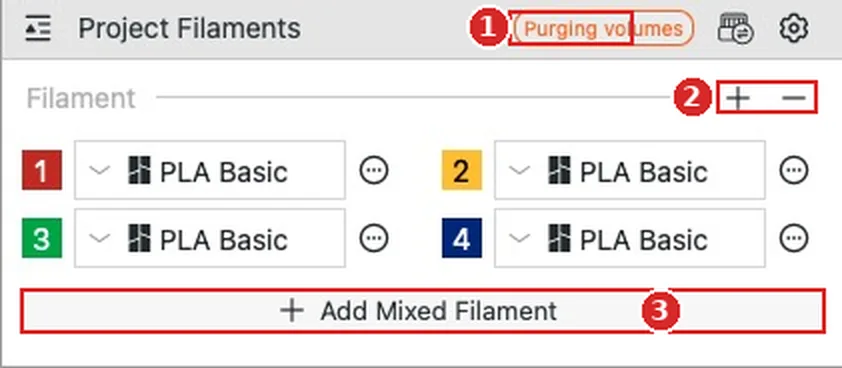
قدم دوم: رنگ دادن به مدل
| روش | چطور | کی |
|---|---|---|
| کل قطعه یک رنگ | قطعه را انتخاب کن و از لیست فیلامنت، شمارهٔ مورد نظر را بده. گزینهٔ Change filament را از منوی راستکلیک ببین. طبق مستندات رسمی | چند قطعهٔ جدا با رنگهای مختلف |
| هر تکه یک رنگ | فایل چندتکه (3MF رنگی) را باز کن، یا از Split استفاده کن. بعد در لیست Objects به هر تکه رنگ بده. طبق مستندات رسمی | مدلهایی که طراح از قبل تکهتکه کرده |
| نقاشی روی مدل | ابزار Color Painting (N) | مدل یکتکه که خودت میخواهی رنگش کنی |
ابزار Color Painting
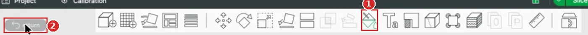
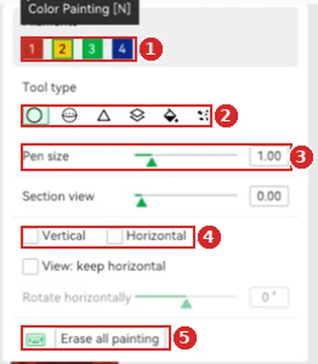
- رنگ را از جعبههای ۱ تا ۴ انتخاب کن و روی سطح بکش.
- برای جزئیات، Pen size را کم کن. برای لایههای افقی از ردیف Tool type استفاده کن.
- اگر اشتباه کردی، Erase all painting همهٔ رنگها را پاک میکند.
قدم سوم: کم کردن ضایعات تعویض رنگ
در هر تعویض رنگ، نازل باید از رنگ قبلی خالی شود و مقداری فیلامنت دور ریخته میشود. این مقدار به تعداد تعویضها بستگی دارد، نه به مقدار رنگ.
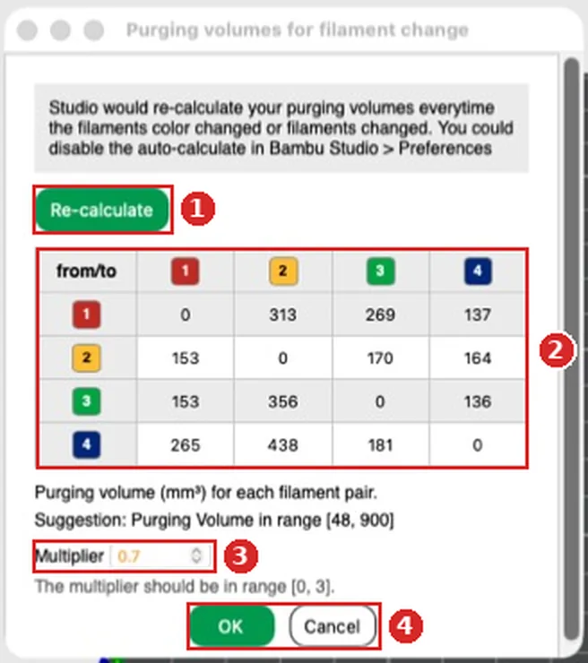
- برنامه با هر تغییر رنگ، مقدار دورریز را دوباره حساب میکند. اگر نمیخواهی، این خودکارسازی را در Bambu Studio > Preferences خاموش کن. این پیام داخل همان دیالوگ هم نوشته شده است.
- تیره به روشن چند برابرِ برعکسش فیلامنت دورریز دارد. جدول را بخوان و رنگهای روشنتر را پشت سر هم چاپ کن تا ضایعات کمتر شود.
- پیشنهاد عملی: Purge into objects' infill دورریز را داخل پرکنندهٔ قطعه خرج میکند. برای قطعهٔ روشن یا شفاف روشنش نکن چون رنگ از زیر دیده میشود.
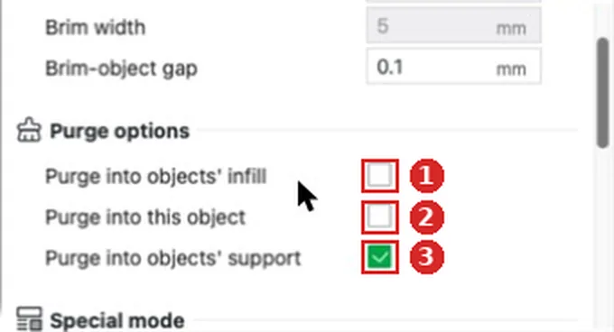
- رنگ را در لایههای کم متمرکز کن. لوگویی که فقط دو لایه ضخامت دارد دو تعویض میخواهد. همان لوگو روی دیوارهٔ عمودی صدها تعویض.
- چند نسخه را با هم چاپ کن. تعداد تعویض ثابت میماند و ضایعات بین همه تقسیم میشود.
- برجک تعویض رنگ را خاموش نکن؛ بدون آن رنگها قاطی میشوند. طبق مستندات رسمی
قدم چهارم: ارسال
در پنجرهٔ Print plate هر رنگ پروژه به یک خانهٔ AMS وصل شده است. اگر اشتباه بود، خانهٔ درست را انتخاب کن. جنس فیلامنت پروژه و قرقره باید یکی باشد. طبق مستندات رسمی
۸لوگو و متن روی قطعه
برای مهر زدن اسم برند روی محصول. متن را مستقیم در برنامه میسازی؛ لوگوی SVG را هم میتوانی وارد کنی. مراحل کامل لوگوی SVG (برجسته، حکاکی و رنگی) در فصل ۱۳ آمده است.
متن
- ابزار متنقطعه را انتخاب کن و کلید T را بزن. یک بخش متن به قطعهٔ انتخابشده اضافه میشود و پنل Text باز میشود. اسم بخش در لیست Objects دیده میشود.
- تنظیمدر فیلد Input text متن را بنویس (پیشفرض Text). Font (پیشفرض Helvetica) و Size (پیشفرض ۱۳ میلیمتر) را تنظیم کن.
- نوعدر Operation یکی از سه گزینه را انتخاب کن (جدول پایین).
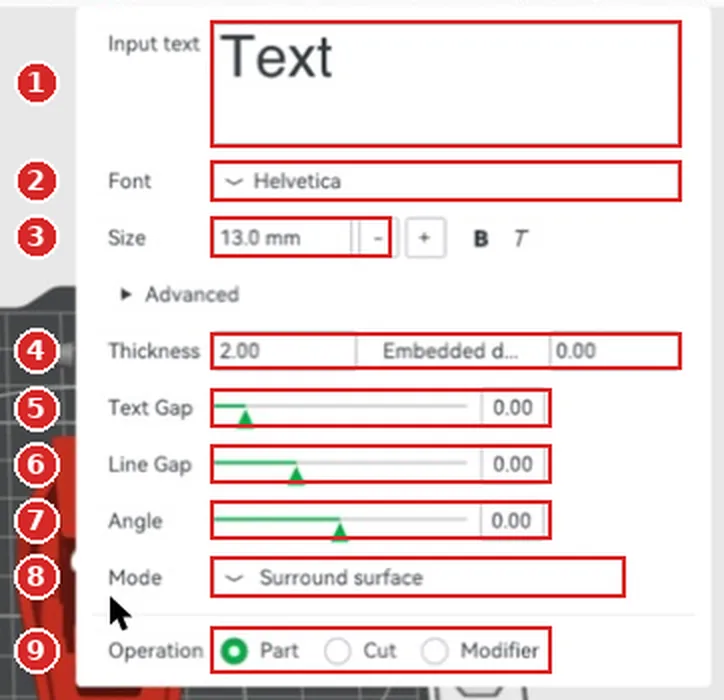
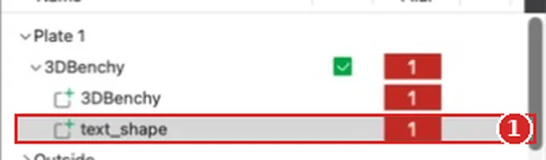
| نتیجهای که میخواهی | Operation | مقدار پیشنهادی |
|---|---|---|
| متن برجسته | Part | بیرونزدگی ۰٫۶ تا ۱ میلیمتر (در فیلد Thickness) |
| متن حکاکیشده (فرورفته) | Cut | عمق ۰٫۴ تا ۰٫۶ میلیمتر |
| متن رنگی همسطح | Modifier با رنگ دیگر | عمق ۰٫۴ میلیمتر، یعنی دو لایهٔ ۰٫۲ |
لوگوی SVG طبق مستندات رسمی
این بخش را در این نسخه روی عکس ندیدهام؛ مراحل زیر از مستندات است و منوی دقیقش ممکن است کمی فرق داشته باشد.
- آماده کردن فایلاگر لوگو PNG است، در Inkscape (رایگان) با Path › Trace Bitmap به SVG تبدیلش کن. لوگوی ساده و تکرنگ بهترین نتیجه را میدهد.
- وارد کردنفایل SVG را روی قطعه بکش یا از منوی File > Import استفاده کن.
- جاگذاریلوگو را روی سطح بکش، اندازه و عمق را تنظیم کن.
- رنگلوگو را در لیست Objects انتخاب کن و رنگ جدا به آن بده.
۹رفع اشکال سریع
| مشکل | اول این را امتحان کن |
|---|---|
| لایهٔ اول نمیچسبد | صفحه را بشوی. Plate type را با صفحهٔ واقعی یکی کن. Bed Leveling را در پنجرهٔ ارسال روشن بگذار. طبق مستندات رسمی |
| نخکشی بین قسمتها | فیلامنت را خشک کن. پروفایل فیلامنت را درست انتخاب کن. |
| خط عمودی روی دیواره (درز) | ابزار Seam painting (P) را بزن و جای درز را خودت روی گوشهٔ پنهان مشخص کن. یا گزینهٔ Quality › Seam position را تغییر بده. طبق مستندات رسمی |
| سطح بالا موجدار یا سوراخدار | تعداد Top shell layers را بالا ببر و Ironing Type را روی یکی از گزینههای ironing بگذار. طبق مستندات رسمی |
| گوشهها بلند میشوند | Brim اضافه کن (Others › Bed adhesion › Brim type). جریان هوای اتاق را کم کن. |
| پیغام خطا روی قطعه بعد از وارد کردن | راستکلیک روی قطعه و گزینهٔ Fix model. طبق مستندات رسمی |
| اندازهها جا نمیروند | با Measure (U) اندازه بگیر. Quality › X-Y hole compensation را کمی زیاد کن. طبق مستندات رسمی |
| مدل از صفحه بزرگتر است | Scale یا برش با Cut (C) |
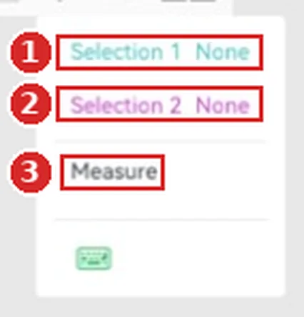
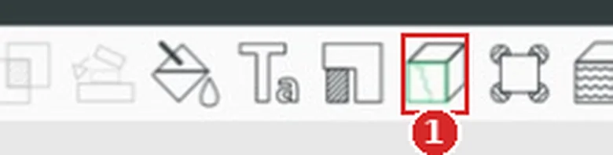
۱۰کم کردن هدررفت (poop) در AMS lite
هر تعویض رنگ مقداری فیلامنت دور ریخته میشود. با تصمیم درست در طراحی و چند تنظیم در برنامه، این مقدار را کم کن. عددهایی که از خود برنامه خواندهام بینشاناند؛ بقیه نشان دارند.
چرا تعویض رنگ فیلامنت هدر میدهد
- A1 mini با AMS lite برش خودکار فیلامنت ندارد و یک نازل دارد. پس در هر تعویض، رنگ قبلی باید از نازل بیرون رانده شود. طبق مستندات رسمی
- مقدار دورریز به جفت رنگ بستگی دارد، نه فقط به تعداد تعویض. تیره به روشن خیلی بیشتر از روشن به تیره فیلامنت میخواهد؛ سیاه به سفید چند برابرِ سفید به سیاه. طبق مستندات رسمی
- فیلامنت شفاف مشکل جدا دارد؛ دورریز را داخل پرکنندهٔ قطعه نریز. طبق مستندات رسمی
- Studio مقدار دورریز را از رنگهای From و To و از فیلامنت ساپورت حساب میکند. طبق مستندات رسمی
- در دیالوگ Purging volumes این عددها را میبینی. مثلاً از رنگ ۱ به رنگ ۲ مقدار ۳۱۳ و از ۲ به ۱ مقدار ۱۵۳ میلیمتر مکعب است. جهت تعویض هم مهم است. طبق برچسب from/to، ردیف رنگ قبلی و ستون رنگ بعدی است.
- تخمین کاربران: هر تعویض حدود ۰٫۳ تا ۱٫۵ گرم دورریز میدهد و مدلهایی با صدها تعویض، چند ده گرم. تجربهٔ کاربران
- مقدار پیشفرض برنامه حدود ۲۸۰ میلیمتر مکعب برای هر تعویض است. تأییدنشده
نقطهٔ شروع پیشنهادی: حداقل هدررفت
این ترتیب را از قدم اول دنبال کن. نقطهٔ شروع پیشنهادی است و با یک پرینت تست امتحانش کن، چون عدد دقیق به رنگهایت بستگی دارد.
- تعداد تعویض را کم کنرنگ را روی لایههای کم بگذار؛ مثلاً لوگویی که فقط دو لایه ضخامت دارد دو تعویض میخواهد و همان لوگو روی دیوارهٔ عمودی صدها تعویض. هر رنگ را به یک بخش از مدل بده و از رنگهایی که لایهبهلایه جابهجا میشوند پرهیز کن. اگر چند نسخه داری، همه را روی یک صفحه با هم بچین. تجربهٔ کاربران
- رنگها و ترتیبشانرنگهای نزدیک را کنار هم بگذار و از پرش تیره به روشن، جفتهای سفید و سیاه، و جفتهای شفاف پرهیز کن. اگر طرح اجازه میدهد، از روشن به تیره برو. فیلامنت لایههای اول و بعدی را روی Auto نگه دار؛ Studio ترتیبی را انتخاب میکند که کمترین دورریز را داشته باشد. شمارهٔ اسلات خودش اثر کمی دارد. طبق مستندات رسمی
- مقدار دورریز را محاسبه کندر دیالوگ Purging volumes روی Re-calculate بزن و عددهای برنامه را نگه دار. Multiplier در برنامه از قبل روی ۰٫۷ است؛ همان را شروع کن. فقط در یک پرینت تستِ دو رنگ ۰٫۶ یا ۰٫۵ را امتحان کن و به محض دیدن قاطی شدن رنگ، یک پله برگرد. هیچ عددی را زیر بازهٔ پیشنهادی (۴۸ تا ۹۰۰) نگذار. کاهش حدود ۲۰ تا ۳۰٪ برای جفتهای نزدیک (۰٫۷ تا ۰٫۸) گزارش شده است؛ پایینتر از آن، رنگ قاطی میشود. تجربهٔ کاربران
- گزینههای Purge optionsگزینهٔ Purge into objects' support را روشن نگه دار؛ اگر ساپورت داری، تعویض روی ساپورت از برجک انجام میشود. طبق مستندات رسمی گزینهٔ Purge into objects' infill را فقط برای قطعهٔ توپر، غیرشفاف و با دیوارهٔ ضخیم روشن کن؛ هر وقت پرکنندهٔ کافی داری (پیشفرض ۱۵٪) و استحکام را هم چک کردهای. برای قطعهٔ شفاف یا روشن با دیوارهٔ نازک روشنش نکن. در یک مثال کاربر با Multiplier ۰٫۵ دورریز یک مدل ۱۲۰ گرمی از ۱۱۵ گرم به حدود ۶۰ گرم رسید، اما زمان چاپ بیشتر شد و رنگ از دیوارهٔ نازک دیده شد. تجربهٔ کاربران در حالت Objects هم گزینهٔ Purge into this object هست.
- برجک تعویض رنگEnable را روشن نگه دار؛ بدون برجک رنگها قاطی میشوند. طبق مستندات رسمی Skip points را روشن نگه دار. اگر برجک را کوچکتر میخواهی، ابتدا Rib wall را ببین؛ Width زمانی قابل تغییر است که Rib wall خاموش باشد. دلیلش را در زیر همین فصل، در بخش «برجک کوچکتر، مصرف کمتر» آوردهام. بعد از هر تغییر، صفحه را با Arrange دوباره مرتب کن.
- اندازهگیری کنبعد از اسلایس به تب Preview برو و پنل Slicing Result را ببین. ردیف Filament change times تعداد تعویض را نشان میدهد. در پرینت چندرنگ ستونهای دیگری ممکن است ظاهر شوند؛ در تصویرهای من فقط ستون Model دیده میشود، چون پرینت تکرنگ است. نام ستونها را بخوان و عدد قبل و بعد از هر تغییر را یادداشت کن.
تنظیمها را کجا ببینم
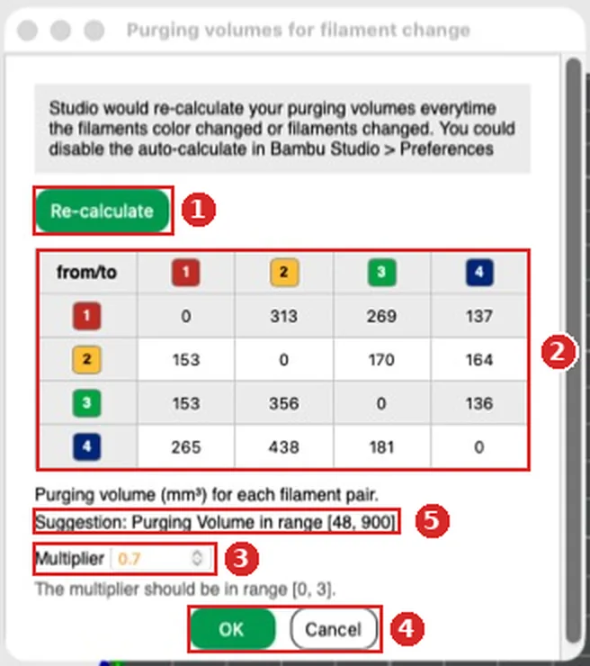
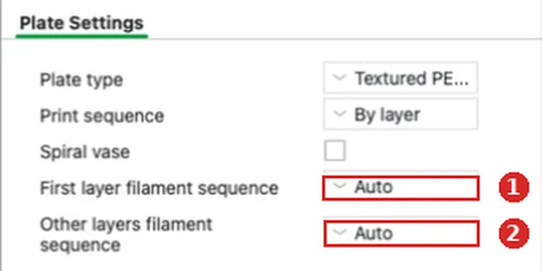
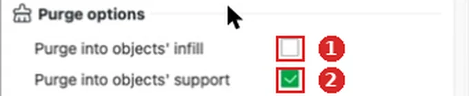
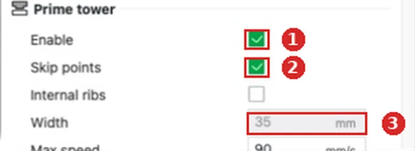
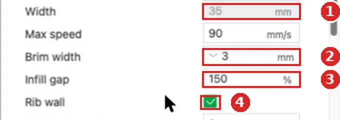
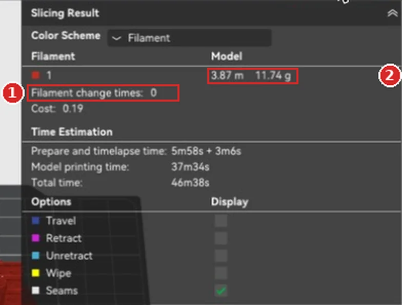
برجک کوچکتر، مصرف کمتر
برجک تعویض رنگ هر بار در یک جای ثابت از صفحه پاک میشود. هرچه بزرگتر باشد، جای بیشتری از صفحه و فیلامنت بیشتری میگیرد. اما اندازهٔ کوچکترش را حجم پاکسازی تعیین میکند؛ برنامه اجازه نمیدهد از آن کوچکتر شود. پس اول تعداد تعویض را کم کن و بعد برجک را کوچک کن.
- اول تعویضها را کم کنکوچککردن برجک فقط وقتی اثر دارد که حجم پاکسازی کم شده باشد. ترتیب بخشهای بالا را دنبال کن.
- Rib wall را انتخاب کندو راه داری. راه اول: Rib wall را روشن نگه دار و Extra rib length را منفی کن (مثلاً ۵- میلیمتر) تا دیوارهٔ دندهها کوچکتر شود. راه دوم: Rib wall را خاموش کن. در این حالت Width قابل تغییر میشود و آن را در قدمهای کوچک (مثلاً ۲ میلیمتر) پایین بیاور.
- تعادل را در نظر بگیربرجک کوچکتر یعنی فیلامنت و جای کمتر، ولی پایداری و حاشیهٔ پاکسازی هم کمتر. برای برجک بلند، فیلامنت PETG یا تعویضهای زیاد، Rib wall را روشن نگه دار. وقتی صفحه تنگ است و برجک کوتاه، میتوانی خاموشش کنی.
- نتیجه را بسنجبعد از اسلایس، عدد فیلامنت را در Slicing Result قبل و بعد از تغییر یادداشت کن و در Preview برجک را ببین. یک تست کوتاه دو رنگی چاپ کن و ببین رنگها تمیز از هم جدا میشوند.
- Brim width را تنظیم کنبرای برجک باریک، یک مقدار مثبت کوچک (پیشفرض این نسخه ۳ میلیمتر) به چسبیدن کمک میکند. مقدار منفی یعنی برنامه پهنای brim را بر اساس ارتفاع برجک خودکار حساب کند.
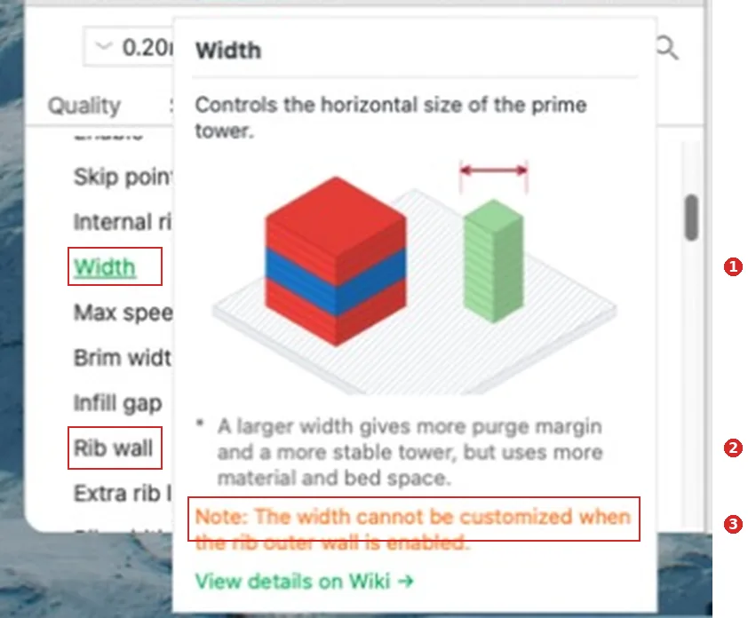
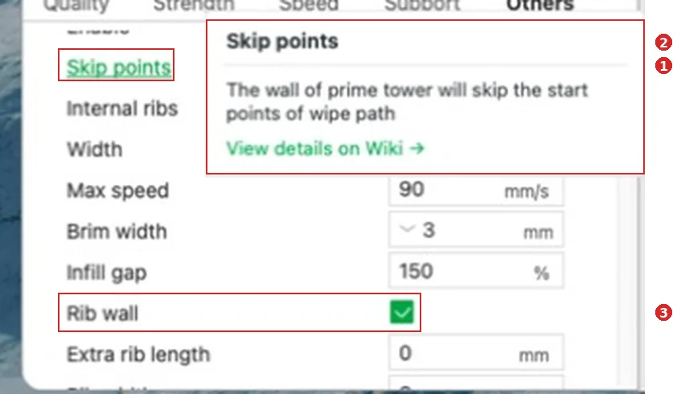
| تنظیم | متن راهنمای برنامه (انگلیسی، همانطور که دیده شد) | یعنی |
|---|---|---|
| Width | A larger width gives more purge margin and a more stable tower, but uses more material and bed space. | پهنای بزرگتر حاشیهٔ پاکسازی و پایداری بیشتری میدهد ولی فیلامنت و جای بیشتری میخواهد. |
| Rib wall | Recommended for tall prime towers, stickier materials such as PETG, or frequent color changes; turn it off when bed space is tight and the tower is short so the width can be narrowed. | برای برجک بلند، PETG و تعویض زیاد؛ اگر صفحه تنگ است و برجک کوتاه، خاموشش کن تا پهنا کم شود. |
| Extra rib length | Positive values can increase the size of the rib wall, while negative values can reduce the size. However, the size of the rib wall can not be smaller than that determined by the cleaning volume. | مقدار منفی دیوارهٔ دندهها را کوچک میکند، اما نمیتواند از اندازهٔ لازم برای حجم پاکسازی کوچکتر شود. |
| Rib width | Rib width is always less than half the prime tower side length. | عرض دنده همیشه کمتر از نصف ضلع برجک است. |
| Internal ribs | Enable internal ribs to increase the stability of the prime tower. | دندههای داخلی برای پایداری بیشتر؛ در این نسخه خاموش است. |
| Skip points | The wall of prime tower will skip the start points of wipe path. | دیوارهٔ برجک از نقطههای شروع مسیر پاکسازی رد میشود. |
| Max speed | The maximum printing speed on the prime tower excluding ramming. | بیشینهٔ سرعت چاپ روی برجک (به جز ramming). |
| Brim width | Brim width of prime tower, negative number means auto calculated width based on the height of prime tower. | پهنای brim برجک؛ مقدار منفی یعنی خودکار بر اساس ارتفاع. |
جدول اهرمها
| اهرم | کجا در برنامه | صرفهجویی (تخمین) | ریسک |
|---|---|---|---|
| تعداد تعویض رنگ | طراحی و چیدمان قطعه | بیشترین اثر، تقریباً متناسب با کم شدن تعویضها تجربهٔ کاربران | نیاز به بازطراحی؛ ظاهر مدل ممکن است عوض شود |
| ترتیب رنگها | Preview › Plate Settings | بستگی به جفت رنگ دارد؛ Auto را نگه دار طبق مستندات رسمی | ترتیب دستی ممکن است دورریز را بالا ببرد تجربهٔ کاربران |
| Multiplier | دیالوگ Purging volumes | حدود ۲۰ تا ۳۰٪ برای رنگهای نزدیک (۰٫۷ تا ۰٫۸) تجربهٔ کاربران | پایینتر از ۰٫۵ احتمال قاطی شدن رنگ تجربهٔ کاربران |
| Purge into objects' infill | Global › Others › Purge options | در یک مثال کاربر تا حدود نصف تجربهٔ کاربران | زمان بیشتر؛ رنگ از دیوارهٔ نازک دیده میشود تجربهٔ کاربران؛ برای قطعهٔ شفاف ممنوع طبق مستندات رسمی |
| قطعهٔ کمکی برای دورریز | Objects | در یک مثال کاربر حدود ۵ گرم تجربهٔ کاربران | قطعهٔ اضافه و زمان بیشتر |
| Width برجک | Others › Prime tower | بستگی به اندازهٔ برجک دارد؛ کوچکتر یعنی فیلامنت کمتر | با Rib wall روشن قفل است؛ خاموش کردن Rib wall یا منفی کردن Extra rib length را ببین (بخش برجک کوچکتر) |
چکلیست قبل از اسلایس
- تعداد تعویض رنگ را کم کردهام و رنگها روی بخشهای بزرگتر نشستهاند.
- فیلامنتهای لایههای اول و بعدی در Plate Settings روی Auto است.
- Re-calculate را زدهام و Multiplier را ۰٫۷ یا عدد تستشدهٔ خودم گذاشتهام.
- هیچ عددی زیر ۴۸ نیست.
- Enable برجک روشن است.
- Purge into objects' infill فقط برای قطعهٔ توپر و غیرشفاف روشن است.
- Purge into objects' support روشن است، اگر ساپورت داری.
- بعد از اسلایس، Filament change times را با نسخهٔ قبل مقایسه کردهام.
۱۱وصل کردن پرینتر به بمبو استودیو
دو راه داری: حالت Cloud با حساب Bambu، یا حالت LAN Only که فقط در شبکهٔ محلی کار میکند. اول تصمیم بگیر، بعد قدمهای همان حالت را برو.
تصمیم سریع: کدام حالت؟ طبق مستندات رسمی
| حالت | وقتی مناسب است | مزایا | معایب |
|---|---|---|---|
| Cloud (حساب Bambu) | اینترنت داری و میخواهی از بیرون شبکه هم چاپ یا پایش کنی | ارسال و کنترل از راه دور؛ پایش با Bambu Handy؛ تاریخچهٔ چاپ | نیاز به اینترنت و حساب؛ منطقه باید درست تنظیم شود |
| LAN Only | اینترنت نداری یا نمیخواهی حساب بسازی | بدون اینترنت؛ ارسال داخل همان شبکه | بیرون از شبکه کنترلی نیست؛ پایش با Handy و تاریخچه نیست؛ کد دسترسی لازم است |
حالت Cloud طبق مستندات رسمی
- منطقه را درست بگذاردر Studio منطقه را تنظیم کن. اگر منطقه اشتباه باشد، حسابی که از منطقهٔ دیگری ساخته شده وارد نمیشود.
- افزونهٔ شبکه را نصب کنقبل از ورود، Bambu Network plug-in باید نصب باشد. نصب آن به اینترنت نیاز دارد.
- با حساب درست وارد شوبا همان حسابی وارد شو که پرینتر به آن بسته شده است. بستن پرینتر به حساب با اپ Bambu Handy و اسکن کد QR روی صفحهٔ Account پرینتر انجام میشود.
- پرینتر را در Device پیدا کنبعد از ورود، پرینتر در تب Device دیده میشود.
- هر دو را روی یک شبکه بگذاربرای ارسال از Wi-Fi، کامپیوتر و پرینتر باید در یک شبکهٔ محلی باشند.
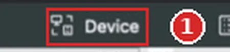
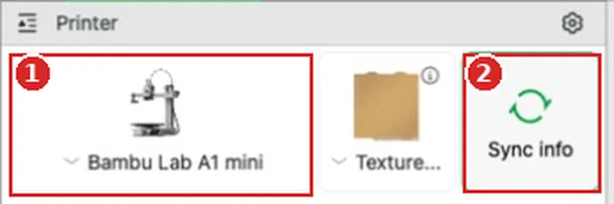
حالت LAN Only طبق مستندات رسمی
- حالت را روی پرینتر روشن کنروی صفحهٔ لمسی پرینتر به Settings برو، به صفحهٔ ۳ برو، LAN Only Mode را بزن و روشنش کن تا سبز شود.
- کد دسترسی را یادداشت کنکد Access Code و IP را روی صفحه ببین. نامها و محل آنها روی صفحه در نسخههای مختلف فرق میکند. تأییدنشده
- لیست پرینتر را باز کندر Studio به تب Device برو و ۲۰ تا ۶۰ ثانیه صبر کن تا پرینتر پیدا شود.
- پرینتر را انتخاب کنپرینتری را انتخاب کن که قفل دارد؛ قفل نشانهٔ پرینتر LAN است. کد دسترسی را وارد کن و Confirm را بزن.
- موفقیت را ببینآیکون Wi-Fi سبز میشود و Live view باز میشود.
ارسال فایل به پرینتر
- Print plate را بزنبعد از اسلایس، دکمهٔ Print plate در گوشهٔ بالا سمت راست فعال میشود. در عکس زیر، Slice plate خاکستری و Print plate سبز است.
- پرینتر را انتخاب کندر پنجرهٔ ارسال پرینتر را از فهرست انتخاب کن، گزینههای Bed leveling یا کالیبراسیون را بررسی کن و Send را بزن. طبق مستندات رسمی این مرحله را در برنامه اجرا نکردهام و شرحش از مستندات است.
- یا روی microSD بریزفایل اسلایسشده را ذخیره کن تا در ریشهٔ کارت قرار بگیرد. قبل از برداشتن کارت از منوی پرینتر آن را خارج کن و کارت را هنگام کار جابهجا نکن؛ سری A1 تعویض داغ کارت را پشتیبانی نمیکند. طبق مستندات رسمی
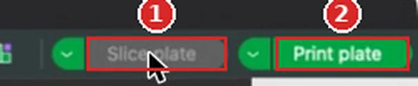
عیبیابی
| مشکل | اول این را امتحان کن |
|---|---|
| خطای Failed to get network plugin | آنتیویروس، فایروال یا امنیت macOS ممکن است دانلود افزونه را بسته باشد. نسخهٔ Studio را در منوی Bambu Studio › About ببین. تجربهٔ کاربران |
| افزونه مدام دوباره بارگذاری میشود | گزارشها دربارهٔ نسخهٔ ۲٫۷٫۱ روی مک است و برای بعضی کاربران در ۲٫۷٫۱٫۶۲ رفع شده. اگر نسخهٔ تو جدیدتر است، ممکن است این مشکل را نداشته باشی. راهحل موقت: کارت SD یا Bambu Connect. تجربهٔ کاربران |
| پرینتر در لیست LAN پیدا نمیشود | پرینتر و کامپیوتر را در یک زیرشبکه بگذار و حالت LAN Only را روشن کن. ۲۰ تا ۶۰ ثانیه صبر کن. شبکهٔ مهمان، Client isolation، VPN، VLAN یا فایروال ممکن است جستوجو را ببندد. طبق مستندات رسمی |
| Wi-Fi پرینتر ضعیف است | پرینتر را چند متری روتر بگذار، SSID ساده با حروف انگلیسی بساز و با هاتاسپات گوشی امتحان کن. تجربهٔ کاربران |
| پرینتر وصل نمیشود و شبکه ۲٫۴ گیگاهرتزی نیست | پرینتر فقط روی ۲٫۴ گیگاهرتز وصل میشود؟ نمیدانم. پشتیبانی از WPA3 یا شبکهٔ سازمانی را هم تأیید نکردهام. تأییدنشده |
| کد دسترسی قبول نمیشود | کد را دوباره از صفحهٔ پرینتر بخوان و LAN Only Mode را یک بار خاموش و روشن کن. این کار را خودم تأیید نکردهام. تأییدنشده |
۱۲تغییر اندازه بدون بهمریختن چفتشدن قطعهها
قطعهای را بزرگ یا کوچک میکنی و بعد چفت نمیشود. دلیلش معمولاً تغییر یکنواخت همهٔ فاصلهها و نبودن جبران برای چاپ است. این فصل قاعدهها را میگوید.
چرا بعد از تغییر اندازه چفت نمیشود؟
- تغییر یکنواخت همهٔ ابعاد را با یک درصد ضرب میکند؛ پس فاصلهٔ ۰٫۲ میلیمتری بین دو قطعه در ۵۰٪ میشود ۰٫۱ میلیمتر.
- خطای پرینتر با کوچک کردن قطعه کوچکتر نمیشود. خطا معمولاً در حد چند دهم میلیمتر ثابت است، پس در قطعهٔ کوچک نسبتش بیشتر میشود.
- پیچ، مهره، آهنربا و بلبرینگ اندازهٔ استاندارد ثابت دارند. اگر جای آنها را با درصد کوچک کنی، دیگر جور نیستند.
- فیلامنت هم کمی جمع میشود. در مثال ویکی، یک قطعهٔ ۱۰۰ میلیمتری بعد از چاپ ۹۴ میلیمتر اندازهگیری شد. طبق مستندات رسمی این عدد به فیلامنت بستگی دارد و بیشتر در جهت X و Y است.
قاعدهٔ اول: از نرمافزار طراحی دوباره خروجی بگیر
بهترین راه این است که در نرمافزار طراحی، اندازهها را مستقیم با میلیمتر عوض کنی، فاصلهها را ثابت نگه داری و دوباره STL بگیری. تجربهٔ کاربران
قاعدهٔ دوم: اگر در Studio تغییر میدهی، همهٔ قطعههای جفتشونده را با یک درصد عوض کن
- همهٔ قطعههای مرتبط را انتخاب کنقطعههایی که به هم میچسبند را با ⌘ و کلیک انتخاب کن، یا همه را با ⌘A انتخاب کن. اگر فقط یکی را عوض کنی، جفتش دیگر جور نیست.
- ابزار Scale را باز کنآیکون Scale را در نوار ابزار بزن یا کلید S را بزن (با کیبورد انگلیسی). پنل Scale باز میشود.
- درصد را وارد کندر ردیف Scale درصد را بنویس، مثلاً ۸۰. در ردیف Size همان ابعاد را به میلیمتر میبینی.
- از ابزار بیرون بیابا دکمهٔ return بالای صفحه برگرد.
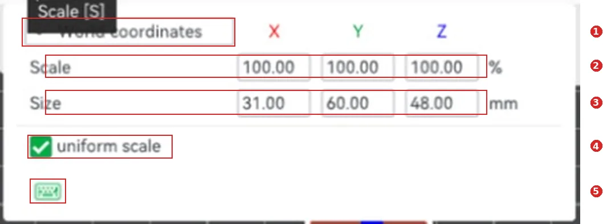
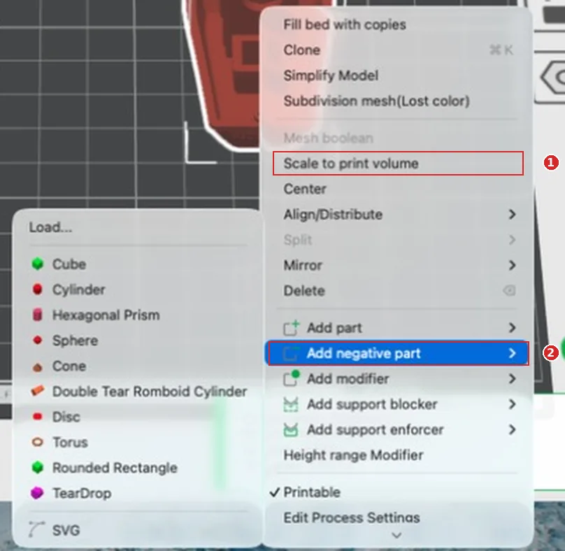
بعد از تغییر اندازه، اینها را دوباره بساز
- کانکتور: اندازه، عمق و تلرانسش را دوباره با میلیمتر چک کن. کانکتورها در فصل ۶ با Size و Depth ratio ساخته میشوند و بعد از درصد باید دوباره تنظیم شوند.
- جای پیچ و آهنربا: حفرهها را بعد از تغییر اندازه با Add negative part و اندازهٔ دقیق میلیمتری بساز. زیرمنوی آن مثل Add part است (در فصل ۱۳ فهرستش را ببین). تأییدنشده فهرست دقیق زیرمنوی Add negative part را هنوز جدا تأیید نکردهام.
- اندازهٔ حفره: اندازه را در پنل Size تایپ کن. جابهجا کردن با موس دقت کافی ندارد.
جبران خطا در تنظیمهای برنامه (Process › Quality)
این تنظیمها را در تب Quality پیدا میکنی. طبق مستندات رسمی
| تنظیم | کاربرد | نکته |
|---|---|---|
| X–Y hole compensation | سوراخهای بستهٔ داخل قطعه را جبران میکند | فقط حفرههای داخلی؛ عدد مثبت حفره را بزرگتر میکند. پیشفرض ۰ است. |
| X–Y contour compensation | خط بیرونی قطعه را جبران میکند | کل محیط بیرونی را جابهجا میکند. |
| Elephant foot compensation | پهنشدن لبهٔ کف را جبران میکند | عدد کم، مثلاً ۰٫۱ تا ۰٫۱۵ (فصل ۴). |
| Precise Z height | ارتفاع دقیق قطعه | در فصل ۴ دیدهای. |
| Auto circle contour-hole compensation | جبران خودکار دایرهها | در مستندات آمده و بیشتر برای H2D است؛ روی A1 mini تأیید نکردهام. تأییدنشده |
- نقطهٔ شروع پیشنهادی برای hole compensation: ۰٫۰۵ میلیمتر برای PLA، ۰٫۱ برای PETG و ABS، و ۰٫۱۵ برای نایلون. طبق مستندات رسمی
- برای اندازهگیری: یک قطعهٔ تست با چند سوراخ چاپ کن، قطر واقعیشان را اندازه بگیر، میانگین خطا را حساب کن و عدد را بر دو تقسیم کن (چون هر دو طرف سوراخ اثر میگیرد). طبق مستندات رسمی
- ضریب انقباض در تنظیمهای فیلامنت هم هست (پیشفرض ۱۰۰٪). عدد را از اندازهٔ اندازهگیریشده و اندازهٔ طراحی بساز و جهت اعمالش را با یک تست کوچک بسنج. طبق مستندات رسمی
تلرانس نقطهشروع برای نازل ۰٫۴
| نوع چفت | تلرانس هر طرف (میلیمتر) | یادداشت |
|---|---|---|
| جای فشاری (Press fit) | 0.05 تا 0.15 | کمترین فاصله؛ برای جای سفت تجربهٔ کاربران |
| لغزشی (Sliding fit) | 0.2 تا 0.3 (PLA: 0.15 تا 0.25) | برای قطعهٔ جداشدنی تجربهٔ کاربران |
| اسنپ (Snap fit) | حداقل 0.3 بهعلاوهٔ یک فنر طراحیشده | فنر باید در طراحی باشد تجربهٔ کاربران |
| متحرک یا چاپدرجا | حدود 0.3 تا 0.4 در کل | قطعههای متحرک که بعد از چاپ آزادند تجربهٔ کاربران |
خطای معمول چاپ حدود ±۰٫۲ تا ۰٫۵ میلیمتر است. تجربهٔ کاربران اگر تلرانس از این خطا کوچکتر باشد، قطعه شانس کمی برای چفت شدن دارد.
ضخامت، جهت و نازل
- سوراخها در جهت XY معمولاً کوچکتر چاپ میشوند. یا آنها را با hole compensation جبران کن، یا بعد از چاپ با مته یا ریمر بازشان کن.
- وقتی اندازه زیر حدود ۷۰ تا ۸۰٪ میآید، دیوارهها و جزئیات ریز اول خراب میشوند. تأییدنشده این عدد تجربی است.
- برای نازل ۰٫۴، دیوارهٔ حدود ۰٫۸ تا ۱٫۲ میلیمتر قاعدهٔ تجربی است. تأییدنشده
- نازل ۰٫۲ میلیمتری: مشخصات A1 mini آن را پشتیبانی میکند، ولی در Printer › Nozzle › Diameter الان ۰٫۴ نشان داده میشود. اگر جزئیات خیلی ریز لازم داری، این گزینه را در تنظیمها ببین. تأییدنشده
مثال عددی
| اندازهٔ اصلی | مقیاس | اندازهٔ نهایی | فاصلهٔ ۰٫۲ میلیمتری تبدیل میشود به | ارزیابی |
|---|---|---|---|---|
| 20 mm | 50% | 10 mm | 0.10 mm | خیلی تنگ. ۰٫۴ را در ۱۰۰٪ طراحی کن تا در ۵۰٪ به ۰٫۲ برسد، یا ۰٫۰۵ به جبران حفره اضافه کن. |
| 20 mm | 75% | 15 mm | 0.15 mm | مرزی برای جفت لغزشی |
| 40 mm | 50% | 20 mm | 0.10 mm | تنگ |
| 40 mm | 80% | 32 mm | 0.16 mm | احتمالاً برای جفت لغزشی مناسب است |
این جدول محاسبهٔ خودِ راهنماست، نه اندازهگیری روی پرینتر. تأییدنشده
چکلیست
- همهٔ قطعههای جفتشونده را با یک درصد عوض کردهام.
- کانکتور و تلرانس را با میلیمتر دوباره چک کردهام.
- جای پیچ و آهنربا را بعد از تغییر دوباره ساختهام.
- hole compensation را با یک تست تنظیم کردهام.
- دیوارهها بالای ۰٫۸ میلیمتر هستند.
۱۳لوگو روی شکل (SVG)
لوگو را برجسته، حکاکیشده یا رنگی روی یک قطعه میگذاری. این فصل مسیر SVG را میگوید. برای نوشتن متن با ابزار T، فصل ۸ را ببین.
آماده کردن فایل SVG
- تکرنگ و ساده کناگر لوگو PNG است، در Inkscape با Path › Trace Bitmap به SVG تبدیلش کن. لوگوی ساده و تکرنگ بهترین نتیجه را میدهد. تجربهٔ کاربران
- متنها و خطها را به مسیر تبدیل کناگر برنامه خطای SVG does not contain a single path to be embossed داد، یعنی فایل هنوز متن یا خط دارد. همه را به Path تبدیل کن. تجربهٔ کاربران
- خطهای خیلی نازک را حذف کنخطی کمتر از ۰٫۸ میلیمتر چاپ نمیشود یا خراب میشود.
ساختن شکل پایه
روی قطعه راستکلیک کن و از Add part یکی از شکلهای Cube یا Cylinder یا Rounded Rectangle را بزن. برای پلاک اسم، میتوانی Load... را بزنی و مدل خودت را وارد کنی.
افزودن لوگو: برجسته، حکاکی یا رنگی
- گزینهٔ مناسب را انتخاب کنروی شکل پایه راستکلیک کن و یکی از این سه گزینه را بزن: Add part و بعد SVG برای لوگوی برجسته، Add negative part و بعد SVG برای لوگوی حکاکیشده، یا Add modifier برای رنگ همسطح. تأییدنشده زیرمنوی Modifier را هنوز ندیدهام.
- فایل را انتخاب کندر پنجرهٔ باز شدن فایل SVG را بزن. کشیدن فایل SVG روی صفحهٔ سهبعدی هم پنجرهٔ همین کار را باز میکند. تجربهٔ کاربران
- روی سطح بگذارلوگو را با موس روی سطح بگذار. گزینهٔ Use surface لوگو را روی سطح تصویر میکند و روی استوانه دور آن نمیپیچد. تجربهٔ کاربران
- اندازه و عمق را تنظیم کنبرای تغییر عمق بعداً، روی بخش SVG راستکلیک کن و Edit SVG را بزن. تجربهٔ کاربران
- رنگ بدهبخش SVG را در لیست Objects انتخاب کن و فیلامنت ۱ تا ۴ را به آن بده.
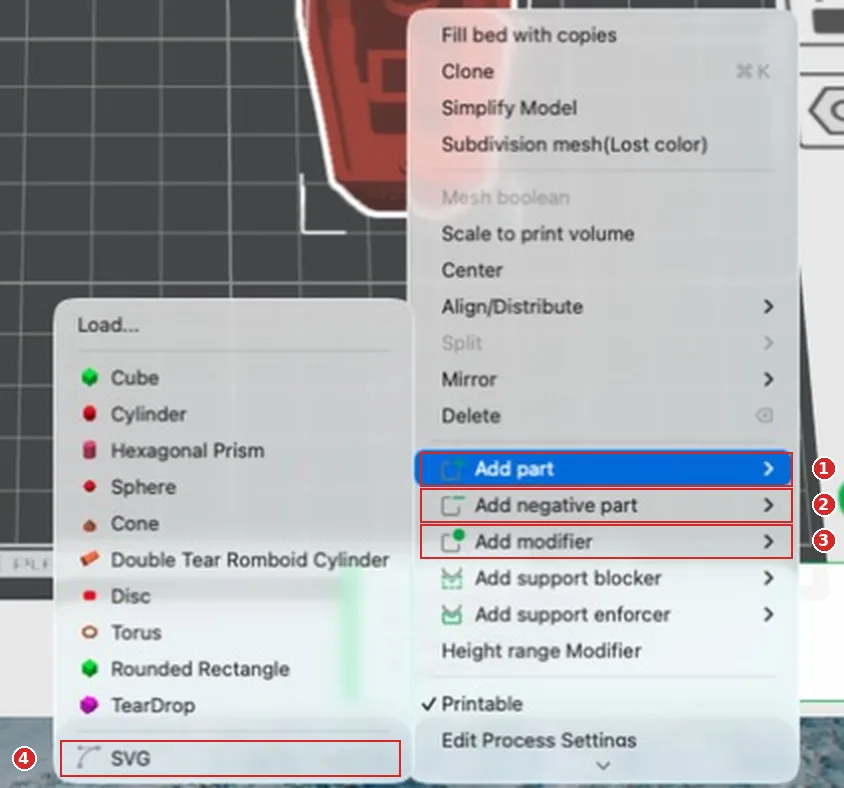
ابزار متن بهجای SVG
ابزار T در نوار ابزار متن را میسازد. پنلش فیلدهای Input text و Font و Size (پیشفرض ۱۳ میلیمتر) و Thickness و Embedded depth و Text Gap و Line Gap و Angle و Mode و Operation را دارد؛ جزئیات در فصل ۸ است. اگر کیبورد فارسی است، اول انگلیسی کن؛ وگرنه کلید T کار نمیکند.
مشکلات رایج
| مشکل | اول این را امتحان کن |
|---|---|
| لوگو دیده نمیشود | عمق صفر است یا ارتفاعش برابر سطح است. عمق را بالای صفر بگذار. تجربهٔ کاربران |
| لوگو لایهٔ اول نیست | قطعه را برعکس بگذار تا کف لوگو روی صفحه بیفتد و لوگو روی لایههای اول چاپ شود. تجربهٔ کاربران |
| خطا یا کرش هنگام افزودن روی سطح دوم | اول یک سطح را کامل کن، پروژه را با ⌘S ذخیره کن و بعد سطح دوم را اضافه کن. تجربهٔ کاربران |
| فایل SVG سنگین است یا کند باز میشود | مسیرها را ساده کن و جزئیات ریز را حذف کن. |
۱۴پروفایلها: ذخیره، ایمپورت و اکسپورت
تنظیمهایی را که خودت ساختهای بهصورت پروفایل نگه میداری، با دیگران رد و بدل میکنی یا حذف میکنی. ساختن پروفایل خودت را از فصل ۴ شروع کن.
منوی File
| گزینه | کاربرد |
|---|---|
| New Window و New Project | پنجرهٔ جدید یا پروژهٔ تازه |
| Open Project... و Recent projects | باز کردن پروژه یا فهرست پروژههای اخیر |
| Save Project و Save Project as... | ذخیرهٔ پروژه (فایل 3MF با مدل و تنظیمها) |
| Show Project in Folder | نشان دادن پروژه در پوشهٔ آن |
| Import › | وارد کردن هندسه (3MF و STL و STEP و SVG و OBJ و AMF) و Import Configs... |
| Export › | خروجیهای اسلایس و مدل که در فصل ۱۵ آمدهاند، و Export Preset Bundle... |
| Publish to MakerWorld | انتشار مدل در سایت MakerWorld |
| Batch Preset Management | مدیریت و حذف پروفایلهای کاربر |
ذخیرهٔ تنظیم خودت
- تنظیمها را عوض کنمثلاً ارتفاع لایه یا سرعت را در بخش Process تغییر بده.
- روی Save current Process بزنآیکون دیسک کنار نام پروفایل را بزن و اسم بده. پروفایل به فهرست بالای پنل اضافه میشود.
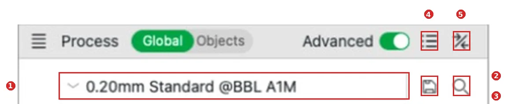
خروجی گرفتن: File › Export › Export Preset Bundle
- پروفایل پرینتر (.bbscfg) همراه پروفایل پرینتر کاربر و فیلامنت و پروسسِ مرتبط آن را دارد.
- باندل فیلامنت با فرمت .bbsflmt ساخته میشود.
- فایل .zip برای پرینتر، فیلامنت یا پروسس هم هست.
- فقط پروفایلهای کاربر فهرست میشوند؛ پروفایلهای سیستمی خروجی گرفته نمیشوند.
- بعد از خروجی، پیام تأیید ظاهر میشود. طبق مستندات رسمی
وارد کردن پروفایل دیگران
- File › Import › Import Configs...فایل را انتخاب کن. فرمتهای پذیرفتهشده .json و .bbsflmt و .bbscfg و .zip هستند. طبق مستندات رسمی
- پرینتر و نازل را مطابق کندر Printer، همان پرینتر و نازلی را انتخاب کن که پروفایل برایشان ساخته شده. ناسازگاری بیشترین خطای این کار است.
- بررسی کنپروفایل را در فهرست بالای پنل پیدا کن. برای دیدن تفاوتها با تنظیم فعلی، Compare presets را بزن.
حذف پروفایل: Batch Preset Management
این پنجره سه تب دارد: Printer presets و Filament presets و Process presets. با جستوجو و Select All میتوانی انتخاب کنی و با Delete پاک کنی. دکمهٔ Delete وقتی چیزی انتخاب نشده خاکستری است.
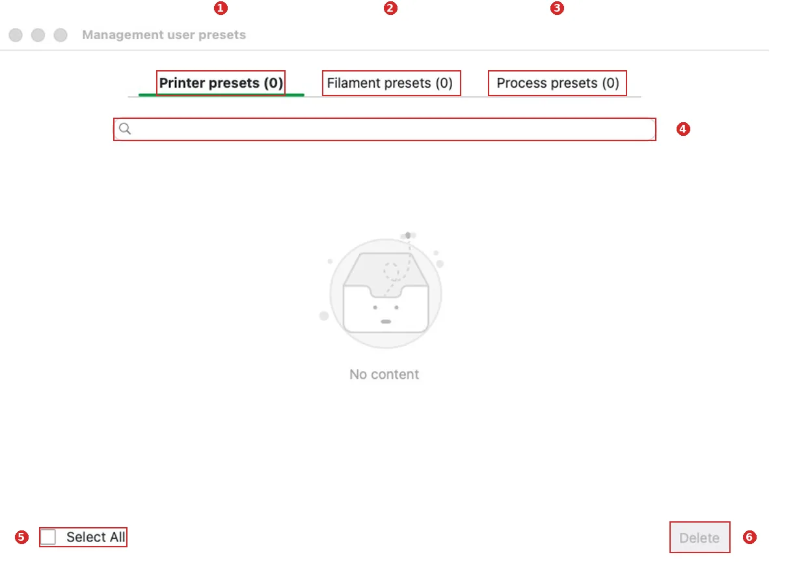
از Cura چه؟
مدیریت فایلهای پروفایل
از منوی Help گزینهٔ Show Configuration Folder پوشهٔ تنظیمها را باز میکند و Check for Presets Update بهروزرسانی پروفایلهای سیستمی را بررسی میکند.
۱۵منوها، خروجیها و میانبرها
این فصل چیزهایی را جمع میکند که در فصلهای قبل جا نشدند: انواع خروجی، میانبرهای برنامه و منوهای اصلی.
کدام خروجی؟
| گزینه | کی استفاده کنم |
|---|---|
| Export plate sliced file... (⌘G) | فایل اسلایسشدهٔ همین صفحه، برای کارت microSD یا پرینتر دیگر |
| Export all plate sliced file... | فایل اسلایسشدهٔ همهٔ صفحهها |
| Export G-code... | فایل G-code خام، برای بررسی یا نرمافزار دیگر |
| Export Generic 3MF... | فایل 3MF عمومی برای برنامهٔ دیگر. برای ادامهٔ کار در Studio، ⌘S (Save Project) را بزن. |
| Export all objects as one STL... و as STLs... | مدل برای برنامهٔ دیگر یا سرویس چاپ، یک فایل یا هر قطعه جدا |
| Export toolpaths as OBJ... | مسیرهای چاپ برای نمایش در نرمافزار سهبعدی |
میانبرهای کلیدی
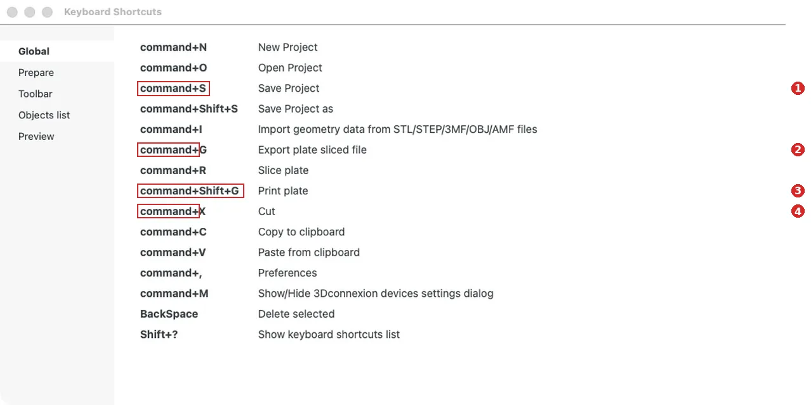
| میانبر | کار |
|---|---|
| ⌘N | پروژهٔ تازه (New Project) |
| ⌘O | باز کردن پروژه |
| ⌘S و ⌘⇧S | ذخیرهٔ پروژه و ذخیرهٔ پروژه با نام تازه |
| ⌘I | وارد کردن هندسه از فایل STL یا STEP یا 3MF یا OBJ یا AMF |
| ⌘R | اسلایس صفحه (Slice plate) |
| ⌘⇧G | Print plate؛ هشدار: این میانبر فرایند ارسال به پرینتر را شروع میکند. قبل از زدنش مطمئن شو. |
| ⌘X و ⌘C و ⌘V | برش و کپی و چسباندن در کلیپبورد |
| ⌘, | تنظیمات (Preferences) |
| BackSpace | حذف قطعهٔ انتخابشده |
| Shift+? | نشان دادن همین فهرست |
میانبرهای تکحرفی ابزارها را باز میکنند: C ابزار برش (تستشده)، T متن، N Color Painting، L Support painting، P Seam painting، U Measure، F Lay on face، S Scale، H Fuzzy skin painting، و E Brim ears (از روی تولتیپها). توجه کن که C ابزار برش است؛ ولی ⌘X برش در کلیپبورد است و کار دیگری میکند.
منوی View
- نماهای آماده: Default View و Top و Bottom و Front و Rear و Left و Right و Isometric.
- Fit Camera برای جا کردن همهٔ مدل در صفحه، و Use Perspective View یا Use Orthogonal View برای تغییر نوع دوربین.
- Show 3D Navigator و Reset Window Layout (برگرداندن چیدمان پنجره) و Show Labels by Layer و Show Overhang.
منوی Edit
- Undo و Redo و Cut و Copy و Paste.
- Delete all و Clone selected و Select all و Deselect all.
- AutoFill (توضیح آن را در این راهنما ندیدهام). تأییدنشده
منوی Help
- Keyboard Shortcuts - Shift+? و Setup Wizard و Show Tip of the Day.
- Show Configuration Folder و Check for Presets Update (فصل ۱۴).
- Report issue و Check for Updates و Open Network Test.
گزینههای کمتر دیدهشدهٔ راستکلیک
- Fill bed with copies: صفحه را پر از کپی همان قطعه میکند.
- Clone (⌘K) و Simplify Model و Mirror و Align/Distribute و Center.
- Mesh boolean و Subdivision mesh(Lost color). در عکسی که از یک قطعهٔ تکی گرفتم، Mesh boolean غیرفعال بود.
- Height range Modifier و Edit Process Settings (تنظیمهای همین قطعه).
تب Calibration
تب Calibration بالای برنامه هست. باز کردنش را آزمایش نکردهام، پس جزئیاتش را اینجا نمینویسم. تأییدنشده